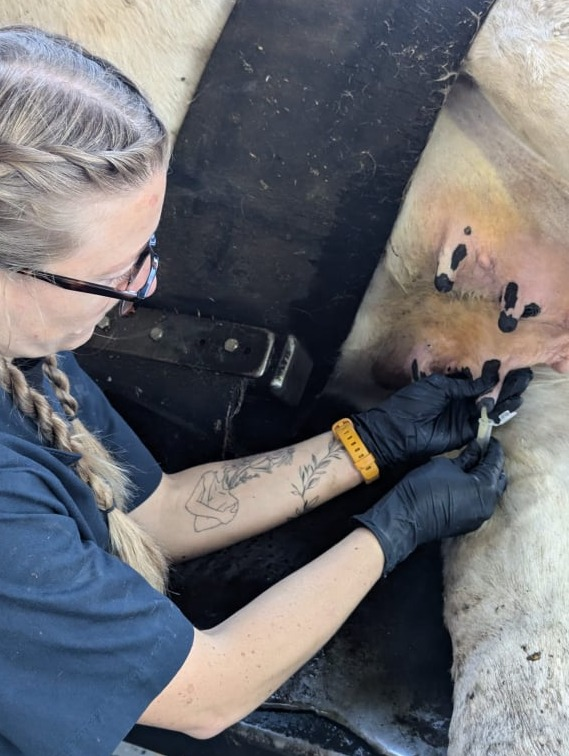
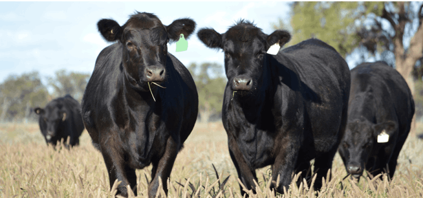
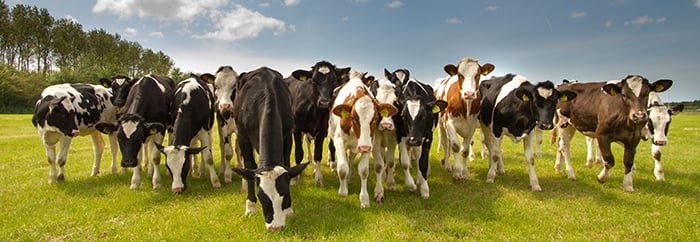
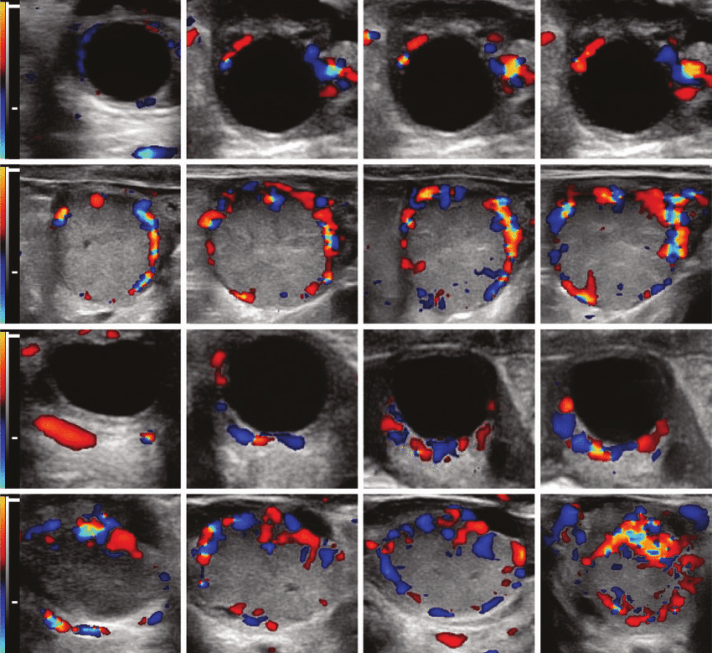
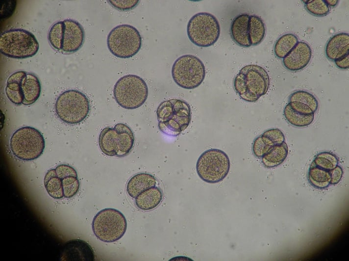

Dairy Health and
Sustainability Lab
About Us
Our Team
Fabio Lima
Richard Pereira
Our Team
Alumni
Active Research Progress
Active Research Progress
Mastitis
NGF
Metritis
Colorful Doppler
New Item
Past Publications
Reproductive Health and Technologies
Infectious Diseases
Antimicrobial Stewardship
Microbial Genomics and Nutrition
Contact Us
Active Research Progress





© Copyright 2025 Dairy Health and Sustainability Lab - All Rights Reserved